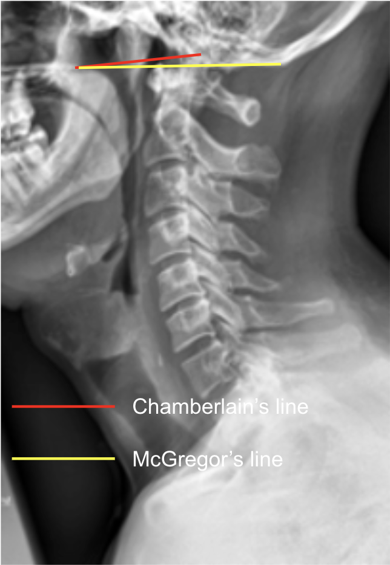
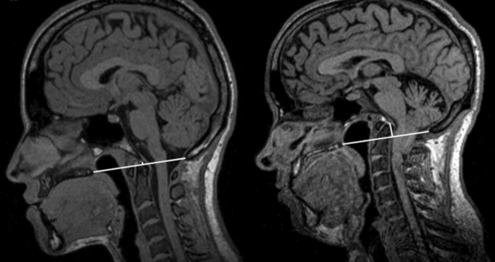

MRI scan depicting basilar invagination based on distance of apex of dens from McGregor’s line. Adapted from: Nascimento JJC, Neto EJS, Mello-Junior CF, Valença MM, Araújo-Neto SA, Diniz PRB. Diagnostic accuracy of classical radiological measurements for basilar invagination of type B at MRI. Eur Spine J. 2019 Feb;28(2):345-352. doi: 10.1007/s00586-018-5841-4. Epub 2018 Nov 29. PMID: 30498960.
1) Description of Measurement
Chamberlain’s Line and McGregor’s Line are radiographic reference lines used to assess the position of the odontoid process (dens) relative to the skull base, helping identify basilar invagination or craniovertebral junction anomalies.
The vertical distance of the dens tip above these lines indicates upward migration of the odontoid into the cranial cavity.
2) Instructions to Measure
Draw the respective lines:
Measure the vertical distance (in mm) from the tip of the odontoid to each line:
3) Normal vs. Pathologic Ranges
4) Important References
Chamberlain WE. Basilar Impression (Platybasia): A Bizarre Developmental Anomaly of the Occipital Bone and Upper Cervical Spine with Striking and Misleading Neurologic Manifestations. Yale J Biol Med. 1939 May;11(5):487-96.
McGREGER M. The significance of certain measurements of the skull in the diagnosis of basilar impression. Br J Radiol. 1948 Apr;21(244):171-81. doi: 10.1259/0007-1285-21-244-171.
Smoker WR. Craniovertebral junction: normal anatomy, craniometry, and congenital anomalies. Radiographics. 1994 Mar;14(2):255-77. doi: 10.1148/radiographics.14.2.8190952.
Menezes AH. Craniovertebral junction anomalies: diagnosis and management. Semin Pediatr Neurol. 1997 Sep;4(3):209-23. doi: 10.1016/s1071-9091(97)80038-1.
5) Other info....
Basilar invagination, atlantoaxial dislocation, or congenital anomalies (e.g., platybasia, Chiari malformation) should be considered when the dens projects above normal limits.
McGregor’s Line is more reproducible radiographically since the opisthion can be difficult to visualize on plain films.
Best assessed on neutral lateral X-rays or CT midsagittal reconstructions.
Always correlate with clinical findings (neurologic deficits, cervicomedullary compression) and adjunct imaging (MRI for soft tissue and neural structures).
Often measured alongside Wackenheim’s line (extension of the clivus) for comprehensive craniovertebral junction assessment.